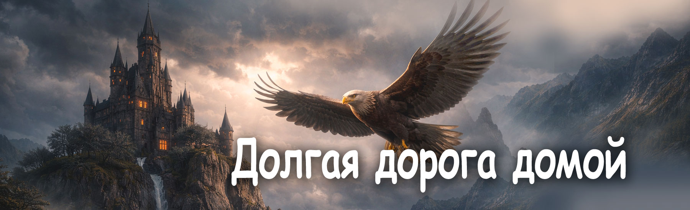

Сказки кота Филомура
бережно записанные его давним поклонником — крысом Мышелем

Долгая дорога домой
(Возвращение гусёнка Фили)
Глава 1 | Глава 2 | Глава 3 | Глава 4 | Глава 5 | Глава 6 | Эпилог
Глава 1 — Похищение
Солнечный день был таким ясным и спокойным, что казалось — ничего плохого случиться не может.
Молодая гусыня Клара сидела на мягкой тёплой траве и вязала кружевной воротничок для своего нового платья. Она тихонько напевала, поглядывая на своего сына — гусёнка Филю.
Филю она не просто любила — она в нём души не чаяла. Он был её первенцем, долгожданным, единственным.
И, как все матери, Клара мечтала дать ему самое важное — любознательность и любовь к наукам. Она верила: если ребёнок понимает мир, он становится добрее, мудрее и сильнее.
Филя оказался необычайно способным малышом. Только подумать: в свой первый день он выучил несколько букв, а через пару дней уже складывал слова из деревянных карточек! Он впитывал знания так быстро, что Клара едва успевала радоваться каждому новому: «Мама, смотри!»
Чтобы поддержать его интерес, Клара купила Филе детский глобус с подсветкой, чтобы по вечерам рассматривать континенты, океаны и страны, и настоящий школьный микроскоп — чтобы изучать малейшие детали природы: пёрышки, травинки, крылышки насекомых.
Филя часами сидел возле глобуса, включал лампочку и шептал названия стран, которые едва помещались в его голове. А микроскоп стал его лучшим другом: сегодня он снова ловил кузнечиков, чтобы рассмотреть их лапки и усики.
Клара смотрела на сына и думала:
«Как же мне повезло. Он такой способный… такой светлый…»
Но вдруг свет померк. Сначала ей показалось, что солнце закрыла туча. Но это была тень. Тень огромных распахнутых крыльев.
Она появилась бесшумно — как удар молнии без грома.
Беркут.
Он рухнул с неба стремительно, будто чёрная стрела. Когти сомкнулись на Филе — быстрее, чем Клара успела вдохнуть.
— Филя!!! — закричала она.
Клара кинулась вперёд. Она билась отчаянно, всей силой матери, защищающей своего ребёнка. Клевала Беркута, била крыльями, цеплялась за перья — но всё было бесполезно.
— Прекрати, глупая курица! — взревел Беркут так, что воздух задрожал. — Ещё одно движение — и я уничтожу твоего птенца у тебя на глазах!
Клара застыла. Лапки подкосились. Она упала на землю, дрожа и умоляя взглядом, но зная: она бессильна.
Беркут поднял Филю выше, крепче прижал когтями и взмыл в небо.
И последнее, что услышал Филя, было мамино отчаянное, рвущее сердце:
— Филя-а-а-а!!!
Яркое солнце ослепило его, и родной птичий двор исчез внизу, превращаясь в маленькое далёкое пятнышко.
Так началась самая трудная история в жизни маленького, любознательного гусёнка.
Глава 2 — Наследник Беркута
Филе казалось, что воздух вокруг стал твёрдым, как ледяная стена. Ветер бил в лицо, холодил шейку, вырывал из груди последние силы.
Маленькие лапки дрожали, а острые когти Беркута впились в мягкое тельце. Но Филя всё равно не плакал. Он не хотел давать этому страшному орлу повод для радости.
Они летели долго — так долго, что Филя перестал понимать, где восток, где запад и где родной птичий двор. Он видел только небо — бесконечное и равнодушное.
Потом внезапно ветер стих. Беркут начал снижаться.
Они приземлились на высокую башню тёмного замка, стоящего на вершине отвесной скалы. Башня казалась такой древней и мрачной, будто выросла из самой ночи.
Беркут поставил Филю на каменный пол. Гусёнок пошатнулся, но устоял.
Хищник величественно расправил крылья — воздух дрогнул — и заговорил голосом холодным, как зимняя река:
— Птенец. Я давно за тобой наблюдаю.
Филя вздрогнул. За ним — наблюдали? Когда? Зачем?
— Ты умён. Ты смел. Ты не заплакал, даже когда я поднял тебя в небо. Это было первое испытание — и ты его прошёл. Ты мне нравишься.
Он склонил голову так близко, что Филя почувствовал горячее дыхание огромной птицы.
— Я — Беркут. Властелин небес. И я избрал тебя своим наследником.
Филя удивлённо моргнул.
— Н-наследником?..
— Да. Не каждый достоин продолжить мою линию. Я видел, как ты учишься, думаешь, читаешь… Ум и воля — вот что делает достойного орла. Тебе необыкновенно повезло.
— Но ты должен доказать, что достоин этой великой миссии.
Филя молчал. Он был слишком маленьким, чтобы понять весь смысл слов Беркута. Но одно ощущение пробилось отчётливо: Беркут хочет дать ему будущее… но забрать у него прошлое.
И будто прочитав его мысли, Беркут продолжил:
— Забудь свою глупую мать и птичий двор. Ты сам видел, птенец: она бросила тебя. Отступила. Выбрала себя, а не тебя.
Филя прижал крылышки к телу. Он знал — это неправда. Но слова хищника были тяжёлыми камнями: давили, ломали, душили.
— Теперь ты — орлёнок. С этого дня ты будешь учиться у меня: летать высоко, думать широко, охотиться без жалости. Я воспитаю из тебя властелина небес.
Он наклонился и прошипел прямо в ухо:
— Но ты должен повиноваться мне беспрекословно. Потому что я — именно я, и никто другой, — знаю, как воспитать орлёнка.
Филя сглотнул. Сердце стучало, как маленький барабанчик. Он дрожал, но держался и не плакал.
В его крошечной груди жила память о маме, о птичьем дворе, о тепле. Эта память не давала ему сломаться. Но и будущее манило — и пугало.
Беркут же смотрел на него холодным, уверенным, царственным взглядом. Он был совершенно убеждён: этот маленький гусёнок станет тем, кем он пожелает.
Глава 3 — Воспитание орла
С того дня жизнь Фили изменилась полностью. Утро начиналось с резкого оклика:
— Вставай, орлёнок! Урок ждёт!
Филя вздрагивал от сурового голоса, но быстро вставал — он не хотел разочаровать Беркута. Он старался держаться прямо, как взрослый орлёнок, хотя маленькие лапки дрожали от холода и страха.
Полёты над древними мирами
Сначала было красиво. Беркут поднимал Филю высоко в небо — туда, где ветер поёт так громко, что заглушает мысли.
С высоты Филя видел египетские пирамиды, шумерские зиккураты, храмы древней Индии, дороги и города. Мир внизу казался огромным, как бесконечная книга.
— Орёл должен знать историю мира, — говорил Беркут строго. — Тот, кто не знает прошлого, не достоин править настоящим.
И он рассказывал о народах, богах, звёздах, легендах — быстро, остро, но удивительно точно.
Филя слушал, раскрыв клюв. Он любил учиться — всегда любил. Но так много знаний на него ещё никогда не обрушивалось сразу.
После истории были уроки латинского, древнегреческого и даже санскрита. Филя повторял слова пискляво, но упорно.
— Неправильно! Повтори! — кричал Беркут.
И Филя повторял. Снова и снова.
Уроки мудрости: математика, физика, химия, биология
А потом наступали уроки, которые Филе нравились больше всего.
Урок математики. Беркут вычертил на каменной плите странную строчку:
e^iπ + 1 = 0
— Это волшебное кольцо — формула Эйлера, — сказал он. — Тот, кто поймёт её смысл, поймёт законы Вселенной. Это ключ к величайшим тайнам мироздания. Запомни её. Сначала — просто как рисунок.
Филя не понимал, что означает e, что такое π, но чувствовал, что эта строка необыкновенно красивая — правильная, ровная, гармоничная, будто живая. А главное — те, кто понимают её, могут понять всё. И Филя захотел её понять.
Потом Беркут рисовал завихрённые линии и символы.
— Это уравнения Максвелла. Они описывают разряды молний, законы света, дыхание звёзд.
Филя заворожённо смотрел на эти знаки и хотел понять их глубокий смысл.
Дальше — химия. Беркут нарисовал аккуратный шестиугольник.
— Это бензольное кольцо. В нём электроны образуют общее облачко. Оно делает кольцо необыкновенно прочным, и потому оно встречается в нас, в животных, в сладости ягод, в запахах трав.
Филя удивлялся: как может маленькое колечко жить и в книгах, и в цветах?
А в биологии Беркут показывал спираль:
— Это ДНК. Книга жизни. Мы принимаем её от предков и передаём тем, кто придёт после нас. В ней записано всё, что нужно, чтобы стать собой.
Филя слушал — и ощущал: мир огромный, сложный, сияющий тайнами. Иногда даже казалось, что Беркут открывает ему настоящее волшебство.
Уроки силы и тени
Но затем начинались уроки охоты. И внутри Фили что-то сжималось.
Беркут учил, как смотреть сверху вниз, как выбирать добычу, как бросаться камнем вниз, как убивать быстро, жестоко, без сомнений и жалости.
— Жалость — слабость! — повторял он. — Хочешь выжить — будь жестоким!
Филя пытался. Очень пытался. Но сердце каждый раз сворачивалось от страха и боли. Он видел дрожащих зверьков, слышал их писк — и не мог.
«Если я не буду охотиться — я не стану сильным… Но разве обязательно нужно быть жестоким, чтобы быть сильным?»
И тут же вспоминались мамины слова:
«Доброта — это тоже сила».
Он хотел быть сильным, как Беркут. Умным, знающим, смелым. Но хотел быть и таким, как мама: добрым, тёплым, настоящим.
Его душа рвалась на части.
Первый главный вопрос
После особенно трудного урока Беркут снова заговорил своим холодным голосом:
— Орлы лучше всех. Мы рождены править. А гуси… ничтожество. Слабость. Грязь. Ты должен стать выше них! Выше всех!
Филя долго молчал. Он аккуратно прижал крылышки к телу и тихо спросил:
— А почему… быть орлёнком лучше, чем быть гусёнком?
Беркут замер.
— Что ты сказал?
— Чем гуси хуже орлов? — повторил Филя, дрожа, но уже смелее. — Моя мама добрая. Она любит меня. Она учила меня читать… Она покупала мне книжки… Она летает — просто не так высоко. И гуси… они не слабые. Они просто… другие.
Слова зависли в воздухе, как лёгкое перышко.
Беркут взорвался:
— ДРУГИЕ?! Гуси — низость! Они никогда не увидят мир, как вижу я! А ты должен быть выше всех — сильным, жестоким, без сомнений!
— А разве… сила — это всё? — едва слышно сказал Филя.
Наказание
Это было последней каплей. Беркут ударил крылом так резко, что Филя упал на камни. Схватил его за шиворот и потащил вниз — в подземелье.
— Ты слишком много думаешь, жалкий птенец! Есть прекрасное место для размышлений. Посиди там. Подумай в тишине. Холод и тьма научат тебя, какие вопросы здесь можно задавать.
Он швырнул Филю в холодный каменный чулан и захлопнул тяжёлую железную дверь.
Стало темно. Тихо. Холодно.
Филя сел, обняв крылышками колени. Он не плакал — плач только ещё сильнее разозлит Беркута.
Но внутри него шёл настоящий бой:
«Я хочу быть сильным… Но не таким.
Я хочу быть умным… Но не злым.
Мама говорила: доброта — это сила.
Беркут говорит: слабость.
Кому верить?..»
Он закрыл глаза. Сидел в темноте — маленький, растерянный, но думающий.
И именно здесь, во тьме чулана, начинался путь его собственных мыслей. Не орлиных. Не гусиных. А его собственных.
Глава 4 — Друг в темноте
Темнота в чулане была такая густая, что казалось — она живая. Она сидела рядом, дышала в углах, шуршала где-то за спиной.
Но Филя не плакал. Он сидел тихо, обняв крылышками самого себя, и слушал, как в маленькой груди стучит сердце:
«Я сильный… Я не боюсь… Ну… почти не боюсь…»
И вдруг — едва слышный шорох. Очень осторожный. Будто кто-то маленький крался, обходя каждую досочку.
Филя замер. Шорох приблизился…
И прямо у его лап прозвучало тихое, смешное:
— Пи-пи… Ты как там? Живой?
Филя вздрогнул.
— К-кто здесь?
— Да никто… просто старая крыса Елизавета, к вашим услугам! — прошептала тонким, уверенным голосом.
И тут он почувствовал: кто-то маленький, тёплый и пушистый прижался к нему.
— Не бойся, — сказала Елизавета. — Я не кусаюсь. Ну… почти никогда.
Филя облегчённо выдохнул.
— Я не боюсь… просто… здесь темно…
— В темноте боятся все, — авторитетно заявила крыса. — Даже большие, страшные орлы. Просто они делают вид, что нет.
Филя тихо улыбнулся — впервые за долгое время.
Разговор в темноте
— Как ты сюда попал? — спросила Елизавета, устраиваясь рядом.
— Беркут… наказал, — прошептал Филя. — Я спросил, чем гуси хуже орлов… А он рассердился.
Крыса фыркнула:
— Он всегда сердится, если кто-то думает иначе, чем он. Он такой.
Филя вздохнул:
— Он сильный… и умный… Иногда мне кажется… может, он прав?
Елизавета мягко коснулась его крылышка усиками — почти по-матерински.
— Сильный и умный — это хорошо, — сказала она. — Но ты тоже умный. И сильный. Но главное — ты добрый. А это самое трудное и самое важное.
Филя задумался.
— А как понять, что правильно?
— Сердце подсказывает, — просто ответила крыса. — Только слушай.
Она чуть помолчала и добавила:
— Я вот тоже раньше мечтала быть как орлы: быстрые, гордые. А потом поняла — я крыса. Но крысы тоже умеют быть мудрыми. Мы маленькие… но мы — выживаем.
И вдруг в груди Фили вспыхнула маленькая тёплая искра.
— Ты думаешь… я могу быть гусёнком и… сильным?
— Конечно! — Елизавета подняла нос. — Сила — это не когти. И не жестокость. Сила — это когда ты сам выбираешь путь… и идёшь по нему.
Эти слова упали в сердце Фили, как семечко, и сразу начали прорастать.
Подарок в темноте
Елизавета зашуршала в углу. Что-то тянула, толкала, пыхтела…
И вдруг к лапкам Фили упал хрустящий кусочек сухаря.
— Держи, — сказала она. — Я утащила с кухни. Он тяжёлый, но вкусный. А тебе нужнее. Ты маленький и замёрз.
Филя распахнул глаза:
— Для меня?..
— А для кого же ещё? — усмехнулась крыса. — Тут больше никого нет.
Сухарь был жёсткий, но вкусный, сладковатый, словно краешек медового пирога. Он согрел его изнутри.
— Спасибо… — прошептал Филя.
— Не благодари, — фыркнула Елизавета. — Мне тоже одиноко. А вдвоём всегда лучше. Даже в чулане.
Надежда
Прошла холодная, длинная ночь. Филя думал — о Беркуте, о маме, о словах Елизаветы.
И он понял два важных, новых слова:
«Я — сам».
«Я — не один».
У него есть маленькое сердце, которое умеет отличать добро от жестокости.
И теперь — у него есть друг.
Из щели раздалось тихое:
— Держись, малыш… я с тобой.
Так Филя узнал: даже в темноте можно найти свет. Иногда свет — это просто маленькая крыса с мудрыми глазами.
Глава 5 — Испытание, ярость и побег
Утро было хмурым и холодным. Ветер бил стены замка, как мокрые плети.
Дверь чулана распахнулась с оглушительным скрипом — Беркут стоял в проёме, тёмный, нахмуренный, опасный.
Елизавета исчезла заранее — нырнула в свою щель, как тень.
— Птенец, — произнёс он ледяным голосом. — Я слишком хорошо о тебе думал. В твоём воспитании допущен промах. И я обязан это исправить.
Он поставил Филю перед собой.
— Сегодня ты будешь охотиться как следует. Покажешь, что ты не гусёнок. Покажешь, что ты — орёл.
Филя почувствовал: что-то не так. Слишком тихий голос. Слишком спокойный. Обычно это значило одно — опасность.
Беркут повёл его в большой каменный зал. Стены были исписаны древними царапинами, пятнами времени и следами когтей.
— Сегодня особый урок, — сказал Беркут. — Ты докажешь, что ты — орёл. Я брошу добычу. Ты должен схватить её и убить. Без жалости. Без колебаний. Иначе ты станешь моей добычей.
Он вытянул лапу и швырнул серый комок.
Комок зашевелился. Задрожал.
Филя приготовился — и вдруг сердце ухнуло вниз.
Это была Елизавета.
Он прошептал:
— Её?..
Беркут кивнул:
— Да. Эта крыса слишком наглая. Хитрая. Она знает лазейки. Она ворует. Это добыча. Твоя добыча.
Елизавета смотрела прямо на Филю. Глаза блестели — но не от страха. Только тихая просьба:
«Не делай этого…»
Филя сделал шаг. Потом второй. Сердце стучало так громко, что заглушало дыхание.
Беркут смотрел, наклонившись вперёд. Крылья дрожали от напряжения. Он ждал.
И в этот момент Филя понял всё.
Это был не урок охоты. Это был урок жестокости. Урок повиновения. Испытание — сломается ли он, станет ли таким, как Беркут.
Филя поднял голову, посмотрел прямо Беркуту в глаза и сказал:
— Нет.
— Что ты сказал?! — взревел орёл.
Филя дрожал, но стоял твёрдо:
— Я не хочу её убивать. Она… мой друг.
В ту же секунду Елизавета рванулась в сторону — и Филя нарочно задержал движение, давая ей шанс.
Она проскользнула между его лап, нырнула в трещину стены и исчезла.
Беркут взорвался:
— ТРУС!!!
— НИЧТОЖЕСТВО!
— СЛАБАК!!!
Ветер от его крыльев ударил в Филю, сбив с лап. Глаза орла полыхали яростью.
Он схватил Филю когтями и потащил по камням, грубо бросив обратно в чулан.
— Ты ОСТАНЕШЬСЯ здесь, пока не научишься быть орлом!!! — рявкнул он, захлопывая дверь.
Тьма поглотила всё.
Друг приходит вновь
Филя сел на холодный пол. Сердце колотилось, словно пытаясь выбраться наружу.
«А вдруг я ошибся? А вдруг надо было слушаться?.. Но ведь он сам говорил — быть сильным… А сила — это тоже уметь сказать “нет”…»
Он закрыл глаза — и почувствовал мамины крылья. Тёплые. Мягкие. Любящие. Будто мама шептала ему:
«Ты сделал всё правильно».
Шорох. Тихий, знакомый.
— Пи-пи-пи… Я здесь.
Елизавета выскользнула из щели — слегка растрёпанная, но целая. Прижалась к Филе:
— Спасибо. Ты спас мне жизнь.
Она достала большой хрустящий сухарик:
— Держи. Ты его честно заслужил.
Филя улыбнулся сквозь слёзы:
— Но что теперь? Он ненавидит меня…
— Это неважно, — сказала Елизавета. — Он злится, потому что не умеет быть добрым. А ты — умеешь. И это твоя сила.
Она развернула свёрток бумаги:
— Вот. Карта. Старый план замка и тропинок. По ней можно выбраться незаметно.
Её глаза блеснули:
— Бежать надо сегодня. Пока он спит. Если останешься — он тебя сломает.
— Но дверь…
— Дверь — это моя забота, — уверенно сказала крыса.
Елизавета ловко взобралась на огромный ржавый ключ. Уперлась лапками. Начала толкать изо всех сил:
— Ра-а-з…
— Два-а…
— Ещё чуть-чуть!..
Филя упёрся плечом в дверь. Металл стонал, скрипел…
И наконец — щёлк!
Дверь поддалась.
Холодный воздух ворвался внутрь — пахнул свободой.
Путь домой
Елизавета провела Филю по тёмному коридору к старым воротам двора.
Развернула карту:
— Слушай внимательно, малыш. Здесь обозначены лазейки, овраги, тропинки. Главное — направление.
Она указала лапкой на восток:
— Твой дом — там.
— Я знаю… там мама.
Затем она ткнула в противоположную сторону:
— Но лететь ты должен на запад.
Филя не понял:
— Но это же… в другую сторону?..
— Да. Потому что Беркут хитёр. Он будет ждать тебя на востоке. Он охотник. Он предугадает твой путь.
Крыса тихонько тронула его крыло:
— Иногда, чтобы вернуться домой… нужно сначала полететь не туда.
Филя посмотрел на карту. Маленький. Измученный. Но уже мудрый.
— Значит… путь должен быть длинным?
— Да. Но верным.
Она прижалась к нему:
— Я верю в тебя.
— А ты?..
— У меня свой путь, — сказала крыса. — Я крыса. Я выживу. А ты — лети домой. Там тебя ждут.
Филя наклонился и тихо коснулся клювом её головы:
— Спасибо…
— Ступай. Пока не поздно.
Он взмахнул крыльями. Поднялся в ночное небо.
И впервые за долгое время летел не по приказу. А по зову сердца.
Луна освещала его путь. Ветер подхватывал его крылья.
Он летел домой.
А внизу, в тени замка, Елизавета смотрела ему вслед и шептала:
— Лети, гусёнок. Лети туда… где тебя любят.
Глава 6 — Долгий путь домой
Ночная тьма была густой, как бархат. Но Филя летел уверенно — куда бы ни бросал его ветер, его маленькое сердце знало: дорога ведёт домой.
Он летел долго. Крылья болели, спина ныла, лапки сводило судорогой. Но Филя не останавливался.
«Я должен… Мама ждёт…»
Озеро лебедей
Когда стемнело совсем, Филя опустился к берегу большого озера. Вода блестела серебром, а по глади плыли белые лебеди — величественные, холодные, гордые.
Филя шагнул в воду. Она напомнила ему родной пруд, где мама Клара учила его плавать. Вода приняла его мягко, как старого друга.
Он подплыл ближе — может, они подскажут путь?
Но лебеди лишь метнули надменный взгляд:
— Гусь?
— Не наш.
— И не лебедь. Пусть плывёт.
И гордо отплыли прочь, взбрызнув его хвостом воды.
Филя не обиделся. Он просто понял:
не все большие — добрые,
и не все маленькие — слабые.
Он выбрал путь к лесу.
Лес, который шепчет
Лес встретил его шорохом листвы и ночных голосов. Сосны стояли тёмными столбами, ели шептали в вышине, тени жили своей жизнью.
Но Филя не боялся. Он уже был не тем малышом, которого схватил Беркут.
С ним была карта Елизаветы. И главное — его собственное сердце, которое выбрало путь.
Он летел долго. Иногда спускался, дрожал под кустом от холода, закрывал глаза…
Но каждый раз снова поднимался в воздух.
Когда рассвело, он увидел с высоты: знакомые поля, знакомую дорожку, старый сад.
И — птичий двор.
Возвращение
Двор был почти таким же, как прежде. Только будто тише. Слишком тише.
У старого сарая сидела Клара. Она сильно постарела. Потускнели перья, опустились крылья, взгляд был усталым и пустым.
Она вязала. Как всегда. Но руки у неё были медленные, слабые.
Она не смотрела в небо. Она уже не ждала.
Но вдруг услышала лёгкий звук — тихий взмах маленьких крылышек.
Она подняла голову.
Перед ней стоял Филя. Потрёпанный, исхудавший, взрослый.
Но — живой.
— Мама… — сказал он тихо. — Это я.
Клара медленно поднялась. Она коснулась его крыла — осторожно, недоверчиво.
Да. Он. Живой.
А потом её крылья сами раскрылись. Сил почти не было — но любовь дала их в миг.
Она обняла его так, как обнимают только тех, кого уже не ждут.
— Сыночек… мой маленький… ты вернулся…
Филя уткнулся клювом в её перья:
— Я всегда помнил дорогу. Потому что ты — моя мама. А сердце всегда знает путь домой.
Птичий двор ожил. Гуси гоготали, куры бегали, утки хлопали крыльями.
Но Клара никого не слышала. Она прижимала сына.
И Филя понял: вот она — настоящая высота. Не небо. А любовь.
Эпилог — О тех, кто возвращаются
Прошло много дней — а может, недель. Двор снова жил своей жизнью.
Филя рос — быстро, крепко, уверенно.
Иногда он поднимался высоко в небо, как учил Беркут… Но сердце мягко напоминало:
«Летай высоко — но не становись жестоким».
Он помнил уроки Беркута — силу, высоту, зоркость. Но помнил и другое: сильный не обязан быть злым. Умный не обязан быть жестоким.
И даже тот, кто летает выше всех, нуждается в тех, кто ждёт его внизу.
По вечерам он рассказывал маме о древних мирах, о звёздах, пирамидах, ветрах пустынь. А она слушала и смотрела на него так, как смотрят на самое дорогое чудо.
Однажды во двор пришёл сам хозяин — Василий Вольдемарович. Он слушал рассказы Фили с живым интересом, а потом спросил:
— Хочешь продолжить учёбу? Я могу обучать тебя точным наукам. Ты к этому создан.
Филя согласился с радостью.
Иногда он спрашивал маму:
— Почему я смог вернуться?
Клара улыбалась:
— Потому что сердце всегда знает путь. Даже если дом на востоке, а ты летел на запад. Память — это и есть дорога.
И Филя знал: тот, кого любят, всегда возвращается. А тот, кто возвращается, становится сильнее.
О Елизавете
Где-то далеко, в старом корне дерева, жила себе мудрая крыса Елизавета. Живая, ловкая, довольная.
Она часто рассказывала малышам-крысятам историю:
— Был у меня друг. Гусёнок. Маленький — а сердцем большой. Он не стал орлом, как хотел злой хозяин. Он стал самим собой. А это — труднее и храбрее всего.
Крысята слушали, раскрыв рты. И думали, что быть собой — самое прекрасное на свете.
🌸 🌸 🌸
❤️ Тем, кто отдаёт больше, чем получает.❤️
Тем, кто вплетает доброту в мир — тихо, без слов.
И тем, кто, как Борис и Верочка, оставляет после себя паутинку солнечного света,
которая никогда не угаснет.

🌟 Вопросы и задания для юного читателя
1. О чём эта глава? Перескажи историю в 3–5 предложениях.
2. Кто главный герой этой главы? Опиши его: внешность, характер и настроение.
3. Если бы ты мог задать главному герою один вопрос, каким бы он был? Запиши его — и попробуй ответить на него от имени героя.
4. Какой выбор сделал кто-то в этой главе? Согласен ли ты с ним? Что бы ты сделал иначе?
5. Найди в главе 5–10 новых слов. Запиши их, узнай их значение и составь по одному предложению с каждым словом.
6. Выбери свою любимую фразу или момент. Почему он тебе запомнился?
7. Придумай короткую дополнительную сцену, которая могла бы произойти дальше. Напиши 3–6 реплик диалога.
8. Придумай новое название для этой главы. Объясни, почему ты его выбрал.
9. Какие чувства вызвала у тебя эта глава? Выбери три слова (например: любопытство, тревога, радость, удивление) и объясни свой выбор.
10. Выбери сцену, которая запомнилась тебе больше всего. Нарисуй её и добавь маленькие детали, которые считаешь важными.